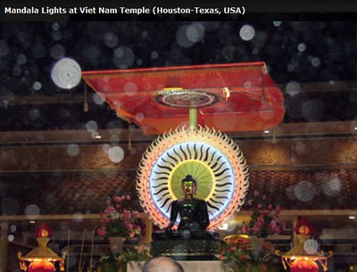
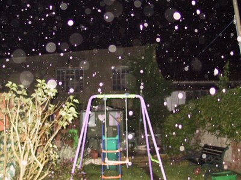
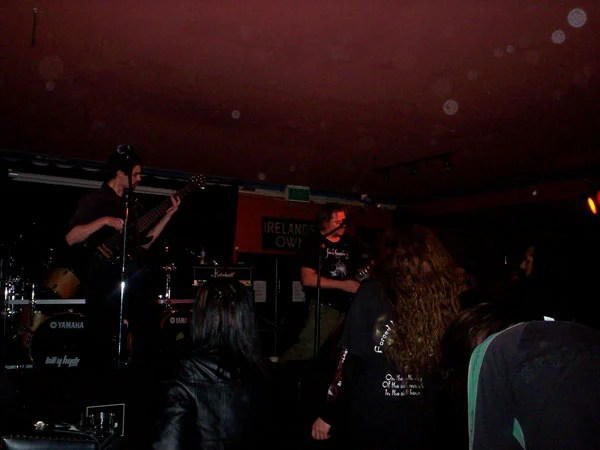
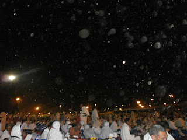

2012-01-27T10:59:00
Original: https://sujato.wordpress.com/2012/01/27/the-deva-totally-orbsome/
You’ve all heard the stories of mysterious orbs of light appearing in digital camera shots. Google ‘buddhism orbs’ and you’ll see plenty like this.

While taken as evidence for divine intervention in Buddhism, the orbs themselves seem to enjoy playgounds

music

Islamic ceremonies

and Christian churches just as well.
And why not, I say.
We had lots of orbs at Santi in our cave and elsewhere: the sand here is highly reflective, kick up a little dust and there’s an abundance of orbs. One of our guests was convinced they were the spirits of arahants – and who am I to say otherwise? I won’t publish any here, as there are already far too many in Buddhism who use such things as evidence of divine connections, and far too many people willing to believe them. Meanwhile, claims go back and forth as to whether such things are real, both in Buddhism and elsewhere.
But I know what you’re all thinking: How can I stop those pesky orbs from ruining my perfect photo? Just when you’ve got it framed and focused right, there comes another of those mischievous spirits to distract everyone from the real subject. Which, it strikes me suddenly, is not dissimilar to the Buddha’s response to such things.
Never fear! DEVA is here. Yes, that’s right: Dust – Eliminating – Video – Apparatus. It’s supplied by the wonderfully-named ‘Ghost Gadgets’. These are not skeptics, but ghost hunters, and they wanted to eliminate the ‘false positives’ in their search for the supernatural. DEVA is a simple unit that fits over your camera lens and eliminates virtually all orbs, which are caused by reflections from dust and the like that fall within the camera’s focal range.